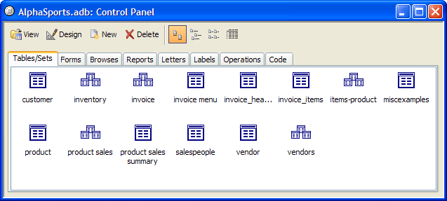
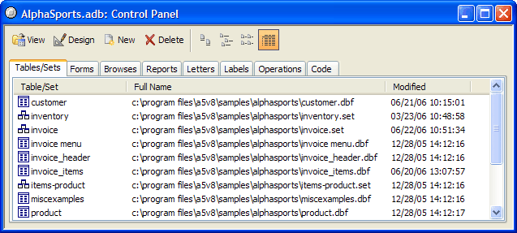
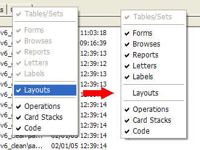
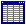
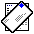
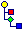

Alpha Five Control Panel
When using Alpha Five, you work with one database at a time. The database
Control Panel is a tabbed interface that organizes
the objects in your database. There are several different views of the
Control Panel, that can be called by clicking
on the appropriate button  on the system toolbar.
on the system toolbar.

The Control Panel: Tables/Sets tab
and filenames and file modification dates.

The Control Panel has two modes. In one mode the Layouts tab replaces the Forms, Browses, Letters, and Labels tabs. You can switch between the two modes by right clicking on any of the tabs and selecting or deselecting the Layout tab.

The Control Panel is made up of several pages, each of which has a folder-like tab at the top. To view a page, click its tab. On each page you'll see item names and icons representing database objects.
|
|
Table Icon |
|
Set Icon | |
|
|
Form Icon |
|
 |
Browse Icon |
|
Report Icon | |
|
 |
Letter Icon |
|
|
Label Icon |
|
|
Operation Icons |
|
|
Menu icon |
|
|
Toolbar icon |
|
 |
Script icon |
|
Function Icon |
The Control Panel buttons, located above the Control Panel tabs, execute specific commands based on the selected database object.
|
|
View : Opens the selected object for viewing. |
|
Design : Opens the selected object in Design Mode. | |
|
New : Opens the New Object Genie for creating a new object. | |
|
|
Delete : Deletes the selected object. |
You use the Control Panel to navigate through the database objects and perform tasks. For example, to view a Form, you can do the following steps:
In the Control Panel, click the Forms tab. A list of forms for the current database appears.
Click on the form you want to view and click the View button.
That is the basic method for starting tasks in Alpha Five: Navigate using the Control Panel and select the object with which you want to work.
You can hide or show a Control Panel tab by right-clicking on it, and selecting or de-selecting it.
 Note : If your Alpha
Five Control Panel is not displaying the tabs
shown above, right-click on the Tables/Sets
tab, and select to display the other tabs.
Note : If your Alpha
Five Control Panel is not displaying the tabs
shown above, right-click on the Tables/Sets
tab, and select to display the other tabs.
Displaying a Hidden Control Panel
When you open the database hold down the Control and Shift keys and tell Alpha Five not to open the startup form.
Another method is to open another database. Click View > Settings. In the Preferences section tell Alpha Five not to open the startup form or run your autoexec script.
Gray table icons appear when Alpha Five knows that certain tables belong in the database, but Alpha Five cannot find them either in the current folder or in the physical path that existed when they were first added to the database.
Using a file manager to move copies of tables into a database folder does not make them part of the database. Alpha does not scan all tables in the database folder and automatically assume that they are part of the current database. You must add tables and sets to the database from the Tables/Sets tab of the Control Panel. To see the path that Alpha Five is using to find a table or set, display the Tables/Sets tab of the Control Panel and click .
Control Panel Objects
You can rename, duplicate, or copy any Control Panel object. For example, copy a custom menu from one database library to another, duplicate a script, rename a function, or copy a form from one table's dictionary to another.
Supported By
Alpha Five Version 5 and Above